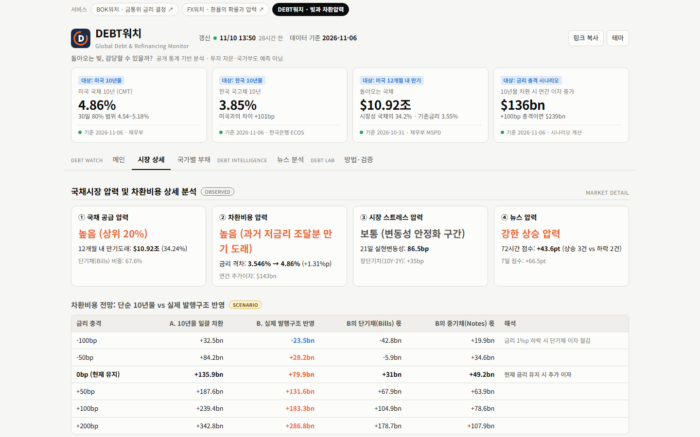
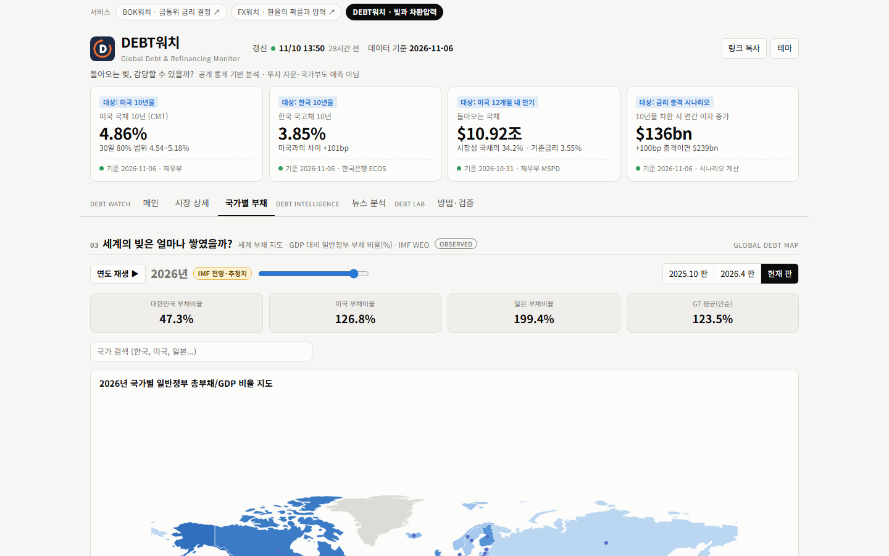
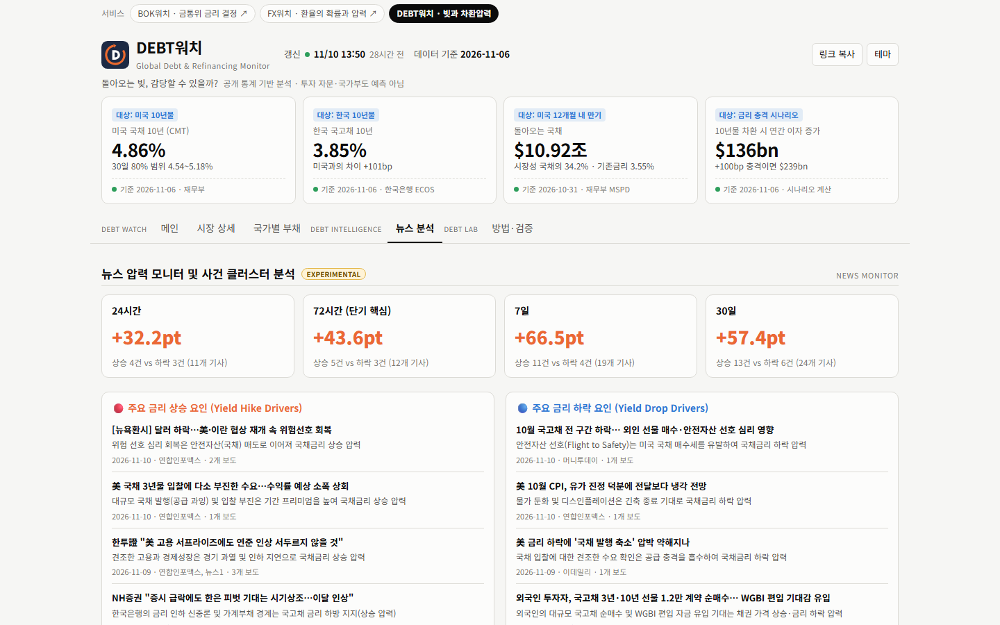

What this service is
Most news about national debt stops at the total. Saying that trillions of dollars have piled up does not tell you when that debt comes due or how much interest will rise then. Even the same debt weighs differently if it is repaid in three years rather than three months, and interest jumps the moment debt borrowed at a low rate is rolled over at a high one.
DEBT Watch calculates that difference. It builds a maturity ladder from the US Treasury's security-level data (460 securities), and calculates the extra interest by assuming maturing Treasuries are reissued at current market rates. Scenarios also show how interest changes when rates rise or fall. Korean and US government bond yields are shown as 80% expected ranges, and news is split into forces pushing yields up and forces pushing them down.
Every number carries its reference date and source, and what is not known is stated as unknown. For Korea we could not obtain security-level maturity and coupon data, so refinancing costs are not calculated, and directional probabilities for the US 10-year forecast are not published until validation is complete.
This is analysis based on public statistics, not investment advice or a prediction of national default. Refinancing costs are scenarios based on assumptions, not a forecast of government interest spending. This service is not approved or sponsored by the data providers.
What you can see
Shows 80% expected ranges 7, 30 and 90 days ahead for the US 10-year and Korean Treasury bonds (10-year and 3-year) as bands. Also see the probability of a 25 bp jump, 21-day momentum, deviation from the 200-day average, and the Korea–US 10-year yield gap and its trend. Four summary cards at the top (US 10-year, Korea 10-year, US maturing within 12 months, rate shock scenario) show the key figures first.
Summarizes US Treasury market and Korean Treasury market news as 72-hour pressure (up, neutral, down), and shows Treasury supply pressure, refinancing cost pressure and market stress pressure as three supply-demand indicators.
Places a simple calculation that rolls all maturing Treasuries into 10-year notes beside one that reflects the actual issuance structure, such as short-term Bills and medium-term Notes, and shows the change in annual interest as rates move from -100 bp to +200 bp. It also has a maturity ladder from 3 to 120 months and the current 10-year yields of five countries: the US, Korea, Japan, Germany and the UK.
Shades a map by each country's general government debt-to-GDP ratio from the IMF World Economic Outlook, and lets you play through the years to see change from 1980 to 2031. Switch between IMF editions (October 2025, April 2026, current) to compare the top 15 countries and the time series of major economies, and check Korea's outstanding central government bonds, the share maturing within a year, the foreign-currency share and the foreign-held share.
Shows news pressure scores over 24-hour, 72-hour, 7-day and 30-day windows, the main factors pushing yields up and down, and a timeline of recent macro events. Even when several outlets report the same event, it is grouped into one event cluster to prevent distortion from article volume. A causality guide explains that bond prices and yields move in opposite directions.
Publishes data sources and collection status, a list of machine-readable JSON files, the backtest report card for the US 10-year forecast model, and the results of a data integrity audit. A text summary (report), llms.txt and a collection status page are also provided separately.
Screen previews
Main — Korea–US bond yield forecast

Market detail — refinancing cost scenarios and maturity ladder

Debt by country — world debt map

News analysis — forces pushing yields up and down
Data and calculation methods
In the backtest, directional hit rates for the US 10-year yield were 47.8% at 7 days (592 cases), 51.6% at 30 days (589) and 51.0% at 90 days (580). The directional probability model did not clear the standard for formal publication, so it is kept as "model under validation" and forecast probabilities are not published. Coverage of the 80% expected range was 76% to 79.6%. On the other hand, for events where yields fall 10 bp or more, or 25 bp or more, within 30 days, a better signal than the baseline model was confirmed.
What we cannot know
Security-level maturity and coupon data were obtained only for the US Treasury. For Korea, Japan, the UK, Germany and Italy the service centers on government bond yield curves, and no maturity map or refinancing cost is built for countries without security-level data. For Korea, we also did not publish the annual Treasury bond issuance limit or the average maturity, because the numbers could not be read from official documents.
Refinancing costs are scenarios based on assumptions, not the government's actual interest spending. The news pressure index is a qualitative auxiliary indicator of market sentiment and is not combined with the statistical model. Some figures, such as Korea's debt ratio, have been revised by the IMF between editions, so the edition name and reference date should be read together.
The accuracy, completeness and timeliness of the figures are not guaranteed. Users are responsible for their own judgments and any consequences of using the service.
Technology and how it's made
A Python collector pulls official APIs and statistics files into static JSON, and the site reads only that JSON to draw its screens. Forecasts, news pressure, refinancing scenarios, the maturity ladder and the world map geometry are all published as JSON under /data. World map boundaries use Natural Earth (public domain) and do not express any political position.
Development status
Updated 2026-11-10 13:50, data as of 2026-11-06. Six official sources are being collected normally, as shown on the collection status page. The US 10-year directional forecast is under validation, so probabilities are not published.